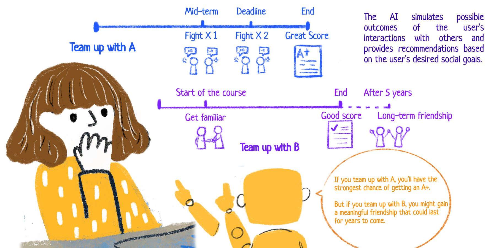
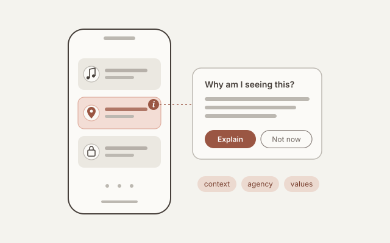
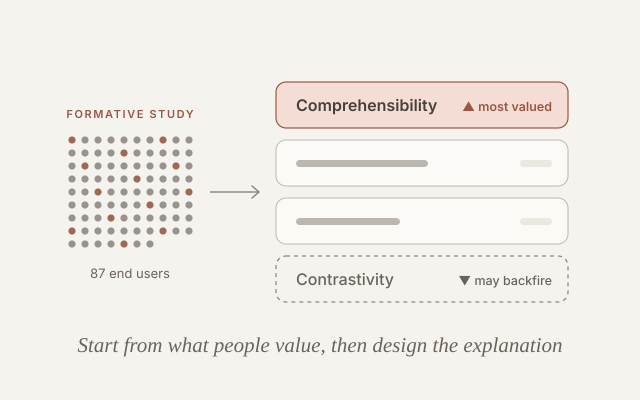
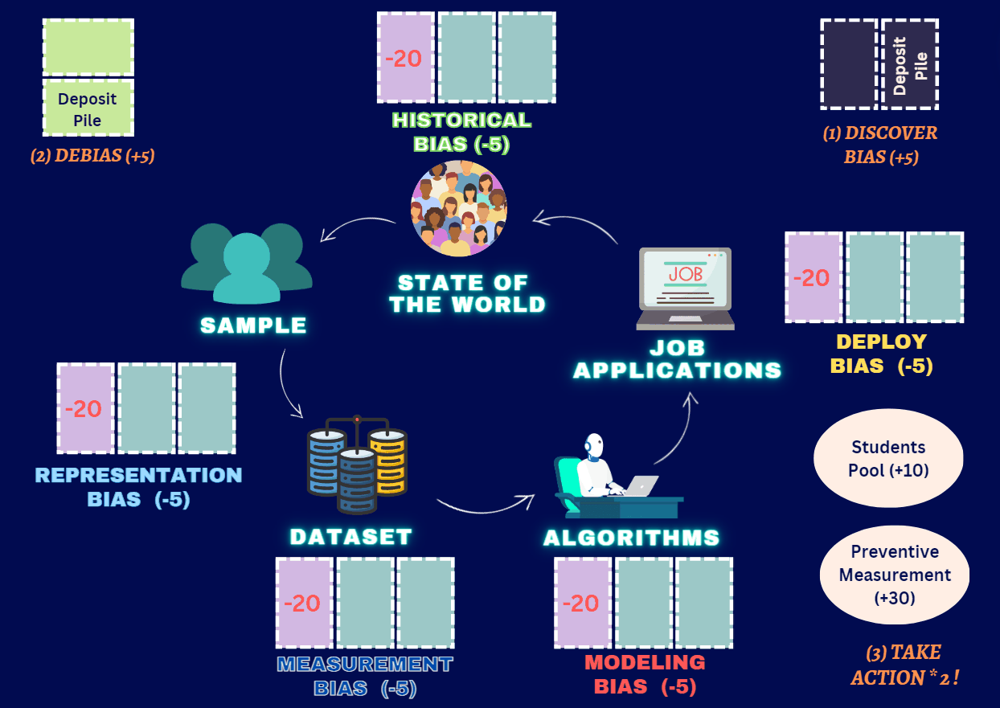

Lingqing Wang
I am a Ph.D. student in Human-Centered Computing at the Georgia Institute of Technology, advised by Prof. Ashok Goel in the Design Intelligence Lab. I study how AI is becoming part of people's everyday and social lives, and how it reshapes the people who use it in turn: their relationships, their sense of agency, and the way they make sense of the systems around them.
My work draws on human-computer interaction, cognitive science, and design research. One thread asks what happens when AI enters social life. Through speculative and participatory design studies, I examine how social AI can erode the very connections it promises to support, create privacy harms for people who never chose to use it, and unsettle users' own agency and identity; this work received a Best Paper Honorable Mention at CHI 2026. Another thread looks at explainable AI from the end user's side: when everyday users want explanations at all, what worries them, and which qualities of an explanation actually help. With Prof. Richmond Wong in the Creating Ethics Infrastructures Lab, I also study how instructors and students can set classroom policy for generative AI together.
Across these projects, I want to move design beyond a narrow focus on the individual user toward systems that account for relationships, communities, and long-term human values. Before Georgia Tech, I studied industrial engineering with a focus on human factors, plus a minor in psychology, at Tsinghua University. Along the way I collaborated with researchers at Northeastern University and the University of Illinois Urbana-Champaign on safety in social VR, the values embedded in machine-learning research on homelessness services, and a game that builds critical literacy about bias in machine learning.
News
-
August 2026
Selected as a Future Leader at the ACM AI Leadership Summit in Atlanta.
-
April 2026
Our paper Futuring Social Assemblages received a Best Paper Honorable Mention 🏆 at CHI 2026 in Barcelona, Spain.
-
Spring 2026
Gave guest lectures in two Georgia Tech courses: CS 8001, the Human-Centered LLM Seminar (April), and LMC 4813 on values and ethics in digital media (February).
-
October 2025
Selected for the doctoral consortium of Georgia Tech's Summit on Responsible Computing, AI, and Society.
-
July 2025
Our paper Explainable AI for Daily Scenarios from End-Users' Perspective was published at DIS 2025 in Madeira, Portugal, where I also served as a student volunteer.
-
May 2025
Equality Engine, a game for building critical literacy about ML bias (co-first author), appeared in PACM HCI for CSCW 2025.
-
April 2025
Our extended abstract "Good" XAI Design: For What? In Which Ways? appeared at CHI 2025 in Yokohama, Japan.
-
April 2025
Spoke at the AAAI Spring Symposium Series in San Francisco. Our paper Reimagining Human-AI Social Collaboration appears in its proceedings.
Selected Research Projects

When AI Enters Social Life: Futuring Human–AI Social Assemblages
A three-phase speculative design study with 24 participants on how social AI reshapes relationships, privacy, and personal agency.
View project
Explainable AI in Everyday Life: Non-Use, Concerns, and Ideal Design
When do people want AI to explain itself in daily apps, and what would good explanations look like to them?
View project
What Makes Explainable AI “Good” for End Users?
A formative study with 87 end users testing which recommended XAI properties actually help, and which backfire.
View project
Equality Engine: A Board Game for Spotting and Fixing Machine-Learning Bias
A cooperative online board game in which players debug a hiring algorithm. After one session, students' self-reported knowledge of ML bias rose significantly.
View projectPublications
-
🏆 Best Paper Honorable Mention
Futuring Social Assemblages: How Enmeshing AIs into Social Life Challenges the Individual and the Interpersonal
CHI 2026
-
Explainable AI for Daily Scenarios from End-Users' Perspective: Non-Use, Concerns, and Ideal Design
DIS 2025
-
"Good" XAI Design: For What? In Which Ways?
CHI 2025 Extended Abstracts
-
Reimagining Human-AI Social Collaboration
AAAI Spring Symposium Series 2025
-
Equality Engine: Fostering Critical Machine Learning Bias Literacy Through a Transformational Game
CSCW 2025 (PACM HCI) * Equal contribution
-
“Let My AI Talk to Me”: The Impacts of Information Conveying Style of Multi-agents on User Evaluation and Disclosure
HCI International 2025
-
Understanding Safety Risks and Safety Design in Social VR Environments
CSCW 2023 (PACM HCI) * Equal contribution
-
“Who is the right homeless client?”: Values in Algorithmic Homelessness Service Provision and Machine Learning Research
CHI 2023
Let's connect.
I'm always glad to talk about research, collaborations, or how AI is changing the way we live with one another.
wanglq [at] gatech [dot] edu